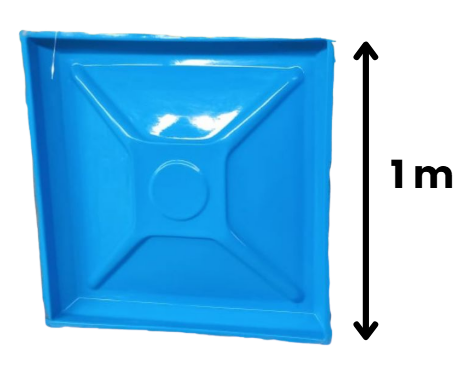

INFRASTRUKTUR DESA DAN KRISIS AIR BERSIH

Berdasarkan berita yang dipublikasikan oleh Radar Banyumas dengan judul "Desa Sindang Purbalingga Kekeringan, 300 KK di Enam RT Krisis Air Bersih", terungkap sebuah masalah sosial yang sangat mendesak. Musim kemarau panjang telah menyebabkan 300 Kepala Keluarga (KK) yang tersebar di enam RT di Desa Sindang, Kecamatan Mrebet, Kabupaten Purbalingga, mengalami krisis air bersih.
Untuk mengatasi hal tersebut, Polsek Mrebet turun tangan memberikan bantuan. Namun, Kapolsek Mrebet menyatakan bahwa pihaknya terpaksa menyalurkan bantuan air menggunakan banyak armada alternatif, seperti mobil dinas dan mobil bak terbuka (pick-up) untuk membawa tangki-tangki air ukuran kecil.
Mengapa demikian? Hal ini terjadi karena tempat penampungan air komunal di desa tersebut kapasitasnya sangat terbatas. Akibatnya, air bantuan tidak bisa diturunkan sekaligus ke satu wadah. Distribusi memakan waktu yang sangat lama, kurang efisien, dan warga di enam RT tersebut harus mengantre berjam-jam. Diperlukan solusi pembuatan tandon air komunal yang lebih besar dan efisien di pusat desa.


Dari Big Idea di atas, mari kita kaitkan dengan materi bangun ruang kubus yang akan kita pelajari. Jawablah pertanyaan berikut:
- Jika kita ingin membuat tempat penampungan air yang lebih besar, bagaimana cara kita menentukan ukurannya agar sesuai dengan target volume air yang dibutuhkan desa?
- Bagaimana cara menghitung jumlah material (panel) yang dibutuhkan untuk merakit tandon air tersebut beserta biayanya?
Setelah menjawab Essential Question, selesaikan Challenge yang akan kalian publikasi berikut:
Kalian ditunjuk sebagai "Tim Konsultan Logistik" oleh Polsek Mrebet. Untuk mengatasi masalah antrean air, Kepala Desa memutuskan untuk merakit sebuah tandon air komunal berbentuk KUBUS dari bahan panel fiberglass yang akan diletakkan di alun-alun desa.
Tandon ini harus dirancang agar bisa menampung seluruh air bantuan secara aman.
Tugas Kelompokmu:
- Hitunglah ukuran (panjang rusuk) tandon air kubus yang harus dirakit agar mampu menampung target air bantuan.
- Hitunglah berapa banyak panel fiberglass yang harus dipesan untuk merakit tandon tersebut secara utuh (tertutup).
- Buatlah Rencana Anggaran Biaya (RAB) pembelian panelnya!
AYO BEREKSPLORASI

Amatilah data rancangan proyek tandon air desa berikut:
- Target Kapasitas Air: Tandon harus mampu menampung tepat 8.000 liter air bantuan.
- Spesifikasi Material: Tandon akan dirakit menggunakan lembaran panel fiberglass berbentuk persegi. Ukuran 1 panel adalah 1m × 1m (luas = 1m2).
- Desain Tandon: Tandon kubus ini dirancang tertutup rapat di semua sisinya (termasuk atap) agar air terhindar dari lumut dan debu.
- Harga Material: Harga 1 lembar panel fiberglass di pabrik adalah Rp367.000.
- Catatan Konversi: 1m3 = 1.000 liter.
Untuk membantu kalian dalam menyelesaikan Challenge di atas, secara individu jawablah pertanyaan investigasi berikut!
- Berdasarkan target kapasitas 8.000 liter, berapa meter kubik (m3) volume tandon air yang harus dirakit?
- Dengan menggunakan rumus volume kubus (v = luas alas × tinggi), tentukan berapa meter panjang rusuk (s) tandon penampungan tersebut!
- Jika panjang rusuknya sudah diketahui, berapa banyak panel ukuran (1m × 1m) yang dibutuhkan untuk menyusun satu sisi/wajah kubus tersebut?
- Menggunakan konsep Luas Permukaan Kubus utuh, hitunglah total keseluruhan panel yang harus dibeli untuk menutupi seluruh bagian tandon!
- Berdasarkan jumlah panel yang didapat pada soal nomor 4, hitunglah total biaya yang harus dibayarkan ke pabrik fiberglass!
Lakukanlah aktivitas berikut bersama temanmu:
- Bentuklah kelompok diskusi yang terdiri dari 4-5 orang.
- Tentukan nama tim konsultan kelompok kalian.
- Lakukan perhitungan secara cermat. Ingat, kesalahan menghitung jumlah panel akan menyebabkan tandon bocor atau pemborosan anggaran desa!
Selesaikan Challenge dengan petunjuk berikut:
- Siapkan kertas kerja penyelesaian kelompok kalian.
- Tulislah nama tim konsultan beserta nama lengkap anggota-anggotanya.
- Tuliskan langkah-langkah penyelesaian matematis dengan runtut (Diketahui, Ditanya, Dijawab).
- Buatlah kalimat kesimpulan akhir. (Contoh: "Jadi, untuk menampung 8.000 liter air, tandon kubus harus memiliki panjang rusuk... meter, dst").
- Persiapkan diri untuk mempresentasikan hasil pekerjaan kalian!
Publishing
- Rapikan hasil perhitungan RAB (Rencana Anggaran Biaya) kalian.
- Unggah hasil karya tim kalian ke ruang pengumpulan tugas Disini.
- Kelompok lain akan memberikan tanggapan untuk memverifikasi keakuratan perhitungan anggaran kalian.
Reflection
Jawablah pertanyaan refleksi berikut secara jujur:
- Apakah kamu dapat memahami bagaimana volume dan luas permukaan kubus digunakan sekaligus dalam satu masalah?
- Saat menghitung total panel, apakah kamu menemui kesulitan? Jika ya, di bagian mana?
- Apakah menggunakan masalah nyata (merakit panel tangki air desa) membantumu lebih mudah memahami tujuan mempelajari geometri ruang?
- Apa nilai yang bisa kamu petik dari pelajaran hari ini terkait pentingnya kemampuan matematika untuk membantu masalah sosial?